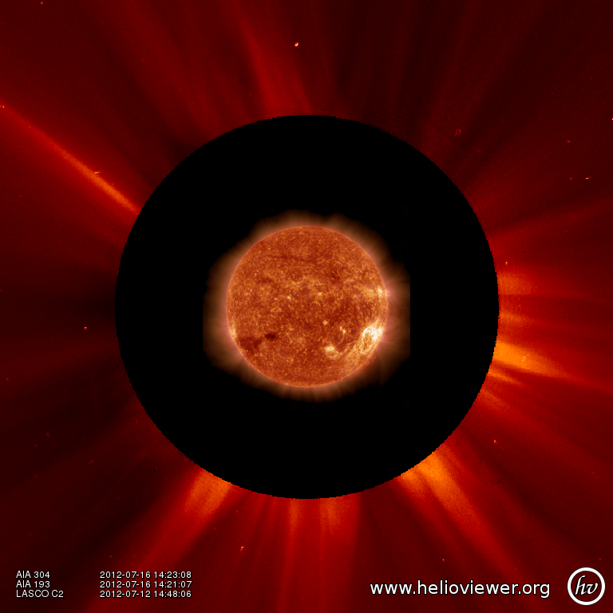
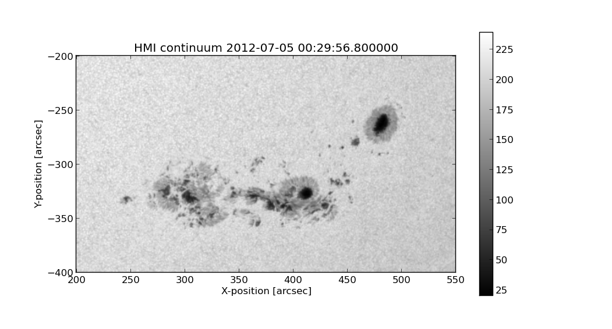

Querying Helioviewer.org with SunPy
SunPy can be used to make several basic requests using the The Helioviewer.org API including generating a PNG and downloading a JPEG 2000 image and loading it into a SunPy Map.
The SunPy Helioviewer client requires installing two other pieces of software. The first - OpenJPEG - is an open source library for reading and writing JPEG2000 files. To install OpenJPEG, please follow the instructions at the OpenJPEG homepage . The other package you will need is the Python Imaging Library (PIL). PIL can be obtained from here. Please follow the instructions there to install (note that PIL may ask you to install other packages too). The reason that two packages are required is because matplotlib natively only reads in PNG files, and OpenJPEG does not write PNG files. PIL is needed because the OpenJPEG command j2k_to_image (which converts a JPEG2000 file to other file formats) does not support outputting to PNG, and PNG is the only format Matplotlib can read in by itself. Matplotlib falls back to trying PIL when it encounters the intermediate image format we use; hence, PIL is required.
To interact with the Helioviewer API, users first create a "HelioviewerClient" instance. The client instance can then be used to make various queries against the API using the same parameters one would use when making a web request.
Nearly all requests require the user to specify the data they are interested in and this can be done using one of two methods:
- Call "get_data_sources()" to get a list of the data that is available, and use the source id numbers referenced in the result to refer to a particular dataset, or,
- Specify the four components of a Helioviewer.org data source or layer: observatory, instrument, detector and measurement.
Let's begin by getting a list of data sources available on the server using the get_datasources method:
from sunpy.net.helioviewer import HelioviewerClient
hv = HelioviewerClient()
datasources = hv.get_data_sources()
# print a list of datasources and their associated ids
for observatory, instruments in datasources.items():
for inst, detectors in instruments.items():
for det, measurements in detectors.items():
for meas, params in measurements.items():
print("%s %s: %d" % (observatory, params['nickname'], params['sourceId']))
Suppose we next want to download a PNG image of the latest AIA 304 image available on Helioviewer.org. We could use the explicit approach:
hv.download_png('2099/01/01', 4.8, "[SDO,AIA,AIA,304,1,100]", x0=0, y0=0, width=512, height=512)
Where 4.8 refers to the image resolution in arcseconds per pixel (larger values mean lower resolution), the "1" and "100" in the layer string refer to the visibility (visible/hidden) and opacity, x0 and y0 are the center points about which to focus and the width and height are the pixel values for the image dimensions.
The result is:

If we find that the source id for AIA 304 is is 13, we could make the same request using:
hv.download_png('2099/01/01', 4.8, "[13,1,100]", x0=0, y0=0, width=512, height=512)
Now suppose we wanted to create a composite PNG image using data from two different AIA wavelengths and LASCO C2 coronagraph data. The layer string is extended to include the additional data sources, and opacity is throttled down for the second AIA layer so that it does not completely block out the lower layer:
hv.download_png('2099/01/01', 6, "[SDO,AIA,AIA,304,1,100],[SDO,AIA,AIA,193,1,50],[SOHO,LASCO,C2,white-light,1,100]", x0=0, y0=0, width=768, height=768)
The result looks like:
Next, let's see how we can download a JPEG 2000 image and load it into a SunPy Map object.
The overall syntax is similar to the download_png request, expect instead of specifying a single string to indicate which layers to use, here we can specify the values as separate keyword arguments:
filepath = hv.download_jp2('2012/07/05 00:30:00', observatory='SDO', instrument='HMI', detector='HMI', measurement='continuum')
hmi = sunpy.make_map(filepath)
hmi.submap([200,550],[-400,-200]).show()

For more information about using querying Helioviewer.org, see the Helioviewer.org API documentation at: http://helioviewer.org/api/.